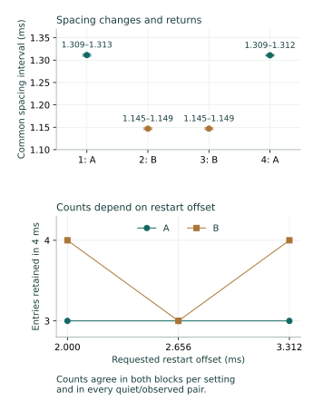

Question and rationale
The preceding restart experiment found that continuous arrivals retained alignment with their reference cadence despite deliberately shifted restart commands. Which controllable setting governs that cadence? This investigation changes the ADC pacing divider while retaining the instructions, selected input, clock controls and observation windows. Reversing the change distinguishes a setting-related response from a simple progression through the boot.
This develops component-local control toward physical Seigsit creation and transfer. A measured acquisition interval is one required apparatus capability; queue records alone do not demonstrate six distinguishable transported states or a physical Seigsit.
Method
Use setting A, ADC DIV=0x00ffff00, and setting B, 0x00dfff00, in A–B–B–A order. Their integer fields are 65,535 and 57,343; both fractional fields are zero. Retain internal input 4, FCS=0x5, existing clock controls and four-millisecond reference and restart windows. Admit each divider change only while stopped, ready and empty. Record the preceding, requested and returned divider values; an unchanged setting omits the write. Recheck the divider after every condition.
Each block contains eight conditions: no command, quiet and observed continuous restarts at offsets 2,000, 2,656 and 3,312 µs, and one single-command control. Controls use 2,656 µs. Blocks 1 and 3 follow that order; blocks 2 and 4 reverse it. Every condition first observes a four-millisecond continuous reference, stops and checks readiness, and drains locally to empty. The selected reference arrival is the last unit increase in queue occupancy. Wait until its upper counter plus the requested offset, recording actual command-access timing separately. A missed deadline refuses the restart.
Observed restart windows bracket queue-status reads; quiet windows read only the counter. No FIFO consumption occurs inside either acquisition window, and no SD persistence occurs between the reference acquisition and the restart stop attempt. After persistence, recover the restart queue, retain the two-millisecond stopped interval and require empty/ready controls. Final cleanup restores converter, queue, divider and clock. The frozen protocol specifies bounds of sixteen changes, 262,144 completed status reads per observed window and sixteen consumed entries per recovery; these are software capacities.
Assessment criteria
Acceptance requires complete execution, admitted divider selections, zero/one-entry controls, error-free recovery, empty stopped checks and restoration. Continuous counts and spacing are measured outcomes. Approximate seven-eighths spacing at B was the declared proportional hypothesis, not a required passing result or an assumed rate law.
For each unit occupancy increase, retain a conservative arrival interval from the preceding read's first counter to the changed read's last counter. Subtract consecutive intervals to bound later spacing. Report their common intersection only for an accepted block with consistent counter frequency. Compare each B interval with each bracketing A interval. These intersections are compatibility intervals, not confidence intervals or exact periods. The first restarted arrival is also compared with integer continuations of its preceding reference cadence.
Preparation and implementation
Candidate 6C4F996F710F uses all eight literal SEIGRASM instruction sources unchanged from EDC2F76A7A2C. Existing native guarded-access, admission, restart, recovery and journal operations execute the new schedule: 245 operations and at most 2,225 records. PC tooling packages the authored opcodes and decodes evidence; no foreign compiler produces the target implementation.
All 37 image-bound supplied-response checks passed, including unchanged, approximately proportional and differently changed pacing, refusal of an unretained divider, missing admission, incomplete recovery and restoration. These are software checks. The frozen protocol specifies a three-minute powered procedure. Two installation readbacks matched the prepared image.
ROM/EEPROM entry, AArch64 execution and counter, SD and PCIe/RP1 interfaces, retained bridge configuration, RP1 xosc and existing component firmware state remain dependencies. This acquisition sequence makes no firmware-service request. Those dependencies have not been replaced by this experiment.
Results
All 2,225 records, 245 operations and 32 conditions completed with accepted execution. The divider-selection write counts were 0, 1, 0 and 1, as expected for A–B–B–A following initial A setup. Every selected value was retained in readback and subsequent admission.
Both B blocks had shorter spacing, and the final A block returned to the original interval. All 101 later-spacing brackets were retained. Each block had a nonempty common intersection. The four B/A interval comparisons range from 0.871981 to 0.877456; every comparison includes 0.875 and excludes unchanged spacing. The observed change is approximately 12.5% shorter spacing, consistent with the declared hypothesis at these two settings.
| Block / setting | Brackets | Counter ticks | Spacing, µs |
|---|---|---|---|
| 1 / A | 22 | 70,693–70,919 | 1,309.130–1,313.315 |
| 2 / B | 29 | 61,840–62,025 | 1,145.185–1,148.611 |
| 3 / B | 28 | 61,842–62,030 | 1,145.222–1,148.704 |
| 4 / A | 22 | 70,696–70,865 | 1,309.185–1,312.315 |

Why three or four entries?
At A, every continuous restart retained three entries. At B, offsets 2,000 and 3,312 µs retained four, while 2,656 µs retained three. This pattern recurred in both B blocks with reversed order, and all twelve quiet/observed pairs agreed across the four blocks.
| Offset, µs | A | B |
|---|---|---|
| 2,000 | 3 | 4 |
| 2,656 | 3 | 3 |
| 3,312 | 3 | 4 |
All twelve observed continuous restarts remained compatible with their preceding cadence: the first restarted arrival aligned with two reference intervals at offset 2,000 µs and three at the other offsets. At B and offset 2,656 µs, first appearance was about 726–733 µs after command access. Under the measured recurring-spacing model, a fourth arrival would fall beyond four milliseconds. At the other two B offsets, the first entry appeared early enough for four arrivals, and the fourth was directly observed before the deadline. All observed counts agreed with stopped occupancy and subsequent recovery.
Inference: the three/four count variation in these conditions is explained by acquisition-window placement within the measured cadence. No missing entry is required by these observations. This does not identify the internal timing mechanism or explain the earlier PMIC excursions, which came from a different acquisition path.
Controls, timing and restoration
All four no-command controls remained empty; all four single-command controls retained one entry. Every observed change was a unit occupancy increase. No observation-capacity exhaustion, queue overflow, queue underflow or per-entry error was recorded. All 64 reference/restart recoveries ended empty; stopped checks remained empty and ready, and final cleanup recovered zero remaining entries.
The references retained three entries in 23 conditions and four in nine. Across references and restarts, 189 raw codes ranged from 844 to 860. This experiment supplies no calibrated temperature or voltage interpretation for those codes.
The reported counter frequency was 54 MHz throughout. Wait overshoot was 2–41 ticks (0.037–0.759 µs). Actual command-access brackets remain distinct from requested offsets. The coordinator interval was 87.188191 seconds, excluding boot loading and the terminal record's final write/readback. Elapsed microseconds use the reported frequency; the counter was not independently calibrated.
Converter control returned to zero, queue control to its empty entry value 0x100, divider to zero and clock control to zero. The surrounding route and clock observations agreed before and after ADC access. These are recorded control checks, not proof of exclusive ownership.
Interpretation and next investigation
The A–B–B–A intervention supports reversible SEIGRASM control of the observed acquisition cadence. It connects a deliberately changed component setting with changed timing and restoration of the preceding timing. Two settings in one boot do not establish a general divider law, absolute ADC clock frequency or recurrence across boots.
The next useful intervention is to distinguish continuous stop/restart from converter disable/re-enable while retaining the divider and clock. Reuse the same arrival reference and preserve the enable, readiness, command and queue observations within one native report. Compare first-arrival alignment after each intervention. If disabling changes the timing origin, that identifies a stronger local control; if alignment persists, the timing source survives that control. Keep acquisition windows bounded and restore the admitted configuration. This is a proposed investigation; its image has not been prepared.
Exact polling effects, internal conversion instants, independently verified analog freshness and calibrated state establishment remain unresolved. The physical Seigsit still requires distinguishable established states and a demonstrated transfer relation. The present result characterizes control needed to test that relation; it does not establish the carrier or Hyphos bootstrap.
Evidence and provenance
Two read-only 64 MiB captures agreed exactly. Capture SHA-256: 2f835acd855c66149a734e0ea607859480fe3929e03e9f9a1300077d0396a31c. Prepared-image SHA-256: ec1a0ec3e86fb8082c5596061874bd42ecc450f0b84b70a25371d0d383fc7c69.
Independent reconstruction checked every reserved journal sector's identity, ordinal, senary fields, padding and integrity, all nested arrival/recovery records and all unused reservations. The partition table and both boot files were unchanged. Seven boot-volume sectors outside the journal differ, including a System Volume Information directory; the writer and timing of those changes are not established by the capture. Actual powered duration and boot count were not separately reported.